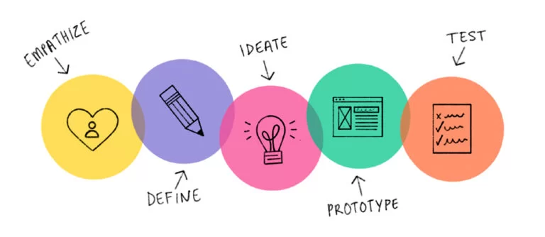

Business
Filmpje
Hieronder heb ik een filmpje over mezelf gemaakt met wie ik ben en waarom ik gekozen heb voor de minor Smart industries.
Deze pagina gaat over de wat ik tijdens de Business lessen heb gehad en wat ik er van heb geleerd
BMC, AXA, veranderplan
Tijdens de minor hebben we een workshop met cassus gehad over het bedrijf AXA
hebben wij eerst een BMC gemaakt, dit vond ik best gemakkelijk en heb toen vooral aan twee
medenstudenten uitgelegd wat we moesten doen en hoe we het beste moesten aanpakken want de
twee studenten waar ik me werkten kwamen bijden uit de opleiding ICT en hebben nognooit een
BMC gemaakt. Uiteindelijk vond de docent onze BMC het best en hebben we het samen voor de
klas moeten presenteren/ uitleggen.
Hieronder een foto van ons BMC

Daarna moesten wij een oplossing bedenken voor het verminderen van schade claims, hierbij
zijn we lang in gesprek geweest met de baas van AXA om eerst te kijken wat hij precies wilt
en daarna te kijken met welke oplossingen we hem het beste kunnen helpen.
We hebben ervoor gekozen om een zo breed mogelijke oplossing te kiezen die aan alle aspekten
van het porbleem een oplossing bied, de oplossing zie je in de afbeelding hieronder:

Design Thinkng
Design thinking is een procesgerichte benadering die wordt gebruikt om innovatieve
oplossingen te ontwikkelen voor complexe problemen. Het wordt vaak toegepast in
verschillende disciplines, zoals productontwikkeling, bedrijfsstrategie, en zelfs sociale en
maatschappelijke vraagstukken.
Het design thinking-proces omvat over het algemeen vijf fasen: Empathize, Define, Ideate,
Prototype en Test
Het unieke aan design thinking is dat het een mensgerichte aanpak hanteert, waarbij de
gebruiker centraal staat in het ontwerp- en innovatieproces. Door empathie te tonen,
creatief te denken en iteratief te werken, kunnen teams effectieve oplossingen ontwikkelen
die echt aansluiten bij de behoeften van de gebruikers.

ELK bedrijfsbezoek
Tijdens deze Minor heb ik een inspirerend bezoek gebracht aan ELK, een
bedrijf dat zich inzet voor het recht van elk mens op een vitale leefomgeving. Hun focus
ligt op het bieden van betaalbare, energiezuinige woningen en het soepel laten verlopen van
bouw- en onderhoudsprocessen in bestaande wijken. Wat ELK onderscheidt, is hun sterke
betrokkenheid bij de bewoners en de nadruk op zowel sociale als technische innovatie. Hun
aanpak richt zich op duidelijke communicatie, heldere afspraken en concrete acties, wat
resulteert in een minimale overlast voor bewoners tijdens werkzaamheden. ELK streeft naar
het creëren van meerwaarde voor elke wijk door middel van toewijding en inzet, en ik ben
geïnspireerd door hun visie en passie voor duurzame, vitale wijken.
Tijdens de dag
hebben we
dus een rondleiding gehad en veel geleerd over hoe ze werken, ook hebben wij op het laast
een presentatie moeten geven over een idee die we hadden om een probleem van Elk op te
lossen.

Tom-model
Het TOM-model (Target Operating Model) is een raamwerk dat organisaties helpt hun toekomstige
operationele staat te definiëren en te bereiken. Het omvat zes hoofdcomponenten: processen,
organisatiestructuur, technologie, data en informatie, mensen, en besturing en governance.
Dit model zorgt voor een gestructureerde aanpak om strategische veranderingen door te voeren
en bedrijfsdoelstellingen te realiseren.
In de workschop die we hierover hebben
gehad van Paul Kalis, vertelde hij over dit Model en hebben we samen met hem het bedrijf AXA
erin gedaan en ons bedrijf Altop Products. hier heb ik veel van geleerd maar vond het Model
wel erg complex.
Smart Business
Tijdens de minor Smart Industries, vooral in de lessen van Smart Business, heb ik veel
geleerd. De cursus over AXA wekte mijn interesse enorm. Hierin verkenden we de
bedrijfskundige kant door middel van het maken van een Business Model Canvas (BMC) en het
bedenken van slimme oplossingen voor diverse problemen. Deze cursus herinnerde me eraan wat
ik zo leuk vind aan bedrijfskunde en heeft mijn motivatie vergroot om deze minor met succes
af te ronden.
Daarnaast maakte ik voor het eerst kennis met design thinking, een concept dat mijn
interesse sterk heeft gewekt. De aanpak en denkwijze van design thinking vind ik bijzonder
inspirerend.
| Leerdoelen/ competenties | Uitgelegd |
|---|---|
| Je toont veel initiatief en betrokkenheid | Mijn aanwezigheid was 100% alleen op een paar dagen dat ik ziek was heb ik niet kunnen komen naar de lessen, als ik in de les zat heb ik altijd mijn mening gegeven en heb ik vragen gesteld als ik die had. hierdoor kun je wel stellen dat ik veel inisatief en betrokkenheid heb getoont tijdens de Minor. ik hoop en denk ook dat de docenten dit wel hebben gezien. |
| Je menigen of adviezen zijn gebaseerd op gedegen onderzoek | Tijdens de les hebben we dus een cassus over AXA waar we eerst een BMC hebben gemaakt en daarna hebben we een oplossing voor een probleem moeten bedenken, de leerraar die er was vond ons idee heel goed bedacht en heeft ons het ook laten presenteren. |
| Je bent bewist bezig met je persoonlijke groei. | Bij de lessen van Smart Business tijdens de minor Smart Industries heb ik bewust aan mijn persoonlijke groei gewerkt. De cursus over AXA wekte mijn interesse voor bedrijfskunde opnieuw, vooral door het maken van een Business Model Canvas en het bedenken van slimme oplossingen. Dit heeft mijn motivatie vergroot om de minor succesvol af te ronden. Ook heb ik voor het eerst kennisgemaakt met design thinking, wat mijn interesse en persoonlijke ontwikkeling sterk heeft gestimuleerd. |
| Je gebruikt feedback en zelfreflectie om te leren. | Ik heb ook veel feedback gevraagt aan mijn studie genoten wat ze vonden wat ik goed deed en wat ik al goed doe, mijn groepsgenoten vonden het soms vervelend dat ik soms iets later op bedrijf ben en heb dat gelijk opgelost door eerder op te staan en optijd van huis te vertrekken. |
| Je helpt actief anderen groeien | Ik heb tijdens de lessen uitgelegd aan de ICT'ers wat een BMC is en hoe we die invullen. Bij de oplossing voor AXA heb ik gezegd hoe we het beste bij het juiste oplossoing kunnen komen |
| Het ontwikkelen van effectieve presentatievaardigheden en het bevorderen van samenwerking met IT-studenten, om zo mijn vermogen te versterken om goed te werken met verschillende vakgebieden in Smart Industries en daarbuiten. | Tijdens de hele minor hebben we genoeg ruimte gehad en vaak kunnen oefenen met mijn presentatie vaardigheden, tijdens de lessen van smart business hebben we dus ook gelukking veel kunnen oefenen. |